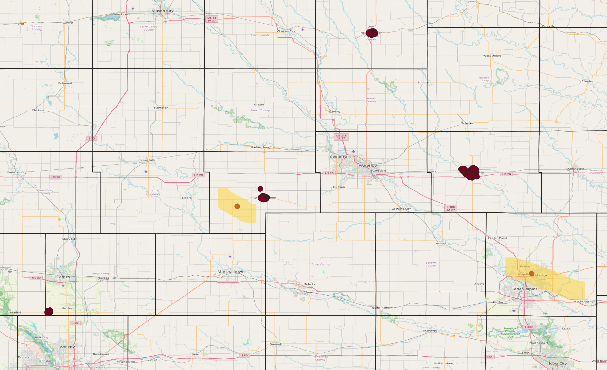

Week 6
WinVEST Project
The first two days of week six were spent collecting data for neighborhoods in Grundy Center, New Hampton and Independence, Iowa. With others from the DSPG group, I used the Fulcrum app to record observations about houses and areas in residential neighborhoods. I assigned good, fair and poor ratings to characteristics such as the roof, gutter, landscape, siding, and sidewalk to the house. I also gave general impressions of midblocks. I observed presence of street lights, signs, and noted the condition of storm drainage systems, sidewalks, and curb cuts. At first it took me a while to do these things, but by the second city, I felt more comfortable with the tasks.
After those two days, my team was able to have conversations on what we thought about the data collection. We noticed that each person had their own qualifications to what was considered a poor attribute versus a fair and good attribute. We thought that using this information for the purpose of training AI models would potentially mislead what we want the AI to believe about a house. This is why some of us may need to go back and re-sort the photos for the model training just to be sure the information isn’t conflicting with what we want the AI to understand about qualifications.

Mapping
I am continuing to work with addresses of the four cities to plot them. My goal is to use maps to display well-trained AI model ratings for landscapes, siding, gutters etc. This will allow us and our clients to visualize where houses in good condition are versus lower condition.
To visualize addresses for the WinVEST cities and Slater, first I used R to geocode them. Base code was from storybench. Here are screenshots of the code. It took about twenty minutes for around 6,600 addresses to be geocoded using this script.
I thought this part would not take me very long, but it did take me a while. I kept running into issues. Even though I had the base code available to me, some parts just didn’t work so I had to re-write new lines and figure out what worked best.
When I though the addresses had been geocoded successfully, I tried to plot them in QGIS but only one point showed. It took time before I realized that there were indeed about 6,600 point but they all had the same coordinate. I had to retrace my steps and find out why this happened. Finally, I was able to get the right coordinates.


I then plotted the addresses using QGIS. I used OpenStreetMap as a basemap. There are some addresses that are not in the correct place (highlighted below). For example, one point is in Linn County where it should be somewhere in Independence. This is something that I will look into more next week. I may remove stray points if needed.

Preparing to visualize AI-generated data
I made a sample map that shows gutter quality for houses in Slater. Hopefully next week I can make maps that show the real condition of other characteristics. I made a new column in excel that randomly has either “Good”, “Fair”, or “Poor” written in each cell. With that field, I was able to to create a map showing good, fair and poor houses in Slater. Though the labels were completely random, it was nice to see what it would look like to show the conditions of the houses spatially. I am currently having trouble with the map legend, so hopefully by the time the csv files are ready with attributes given by AI, I will have enough knowledge to complete several more maps.